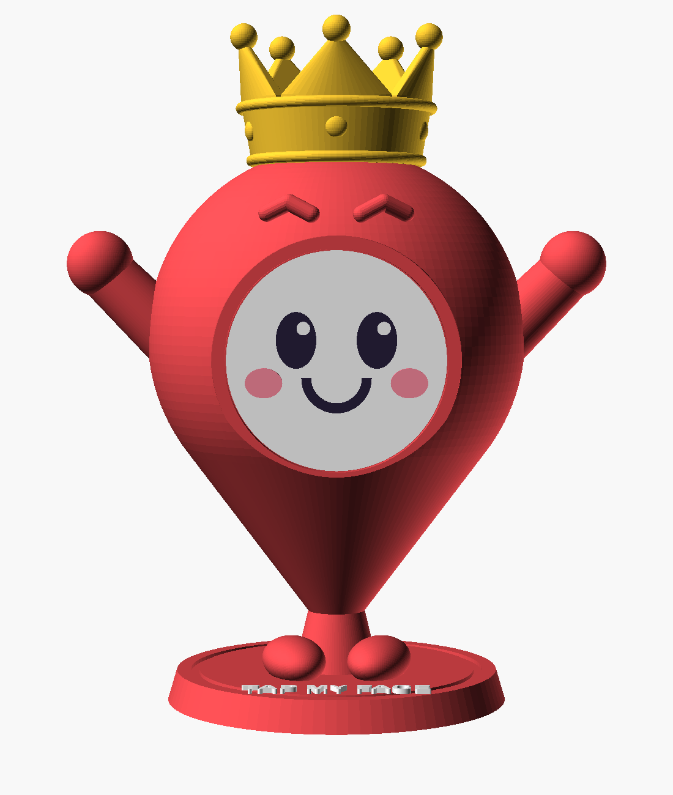
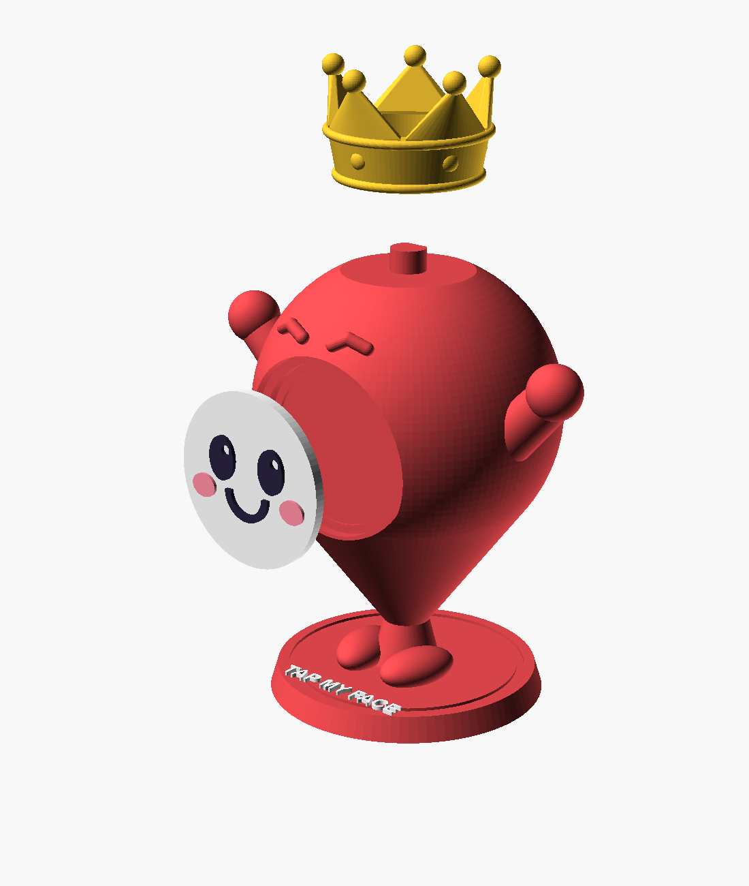
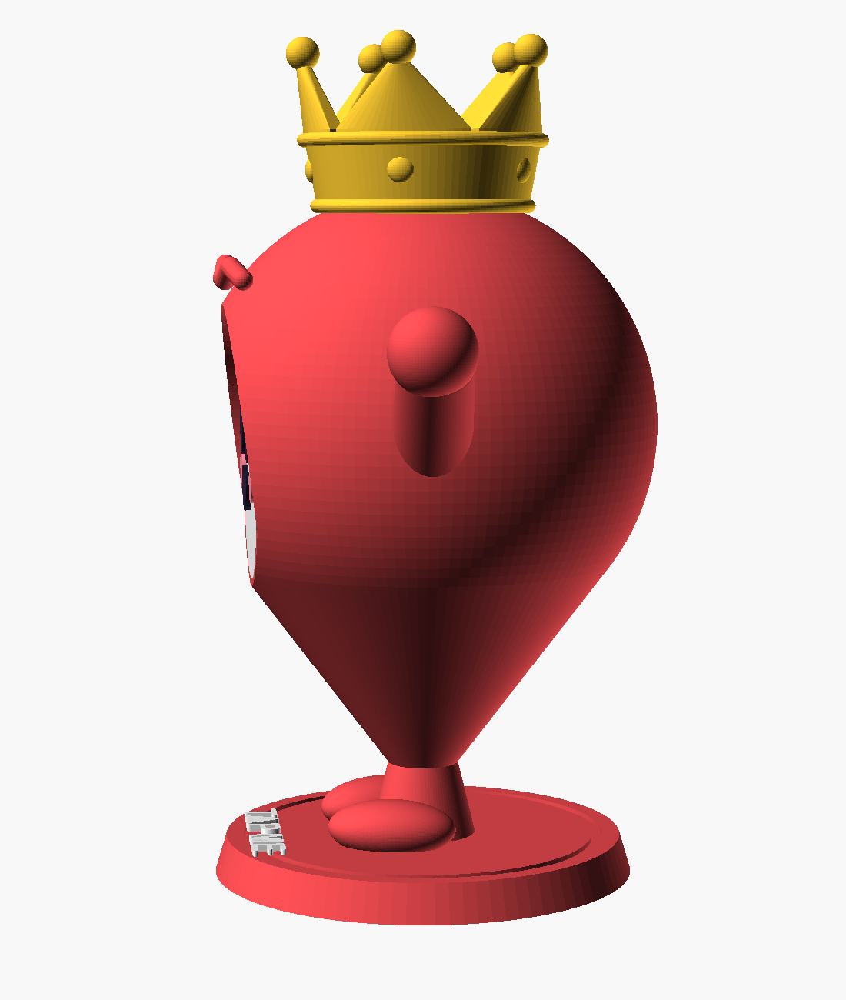

At a glance
- About 88 mm wide (arms) and 110 mm tall with the crown
- Base 56 mm across
- Face 34 mm; tag 2 mm behind it
- Swap the crown for any city's accessory
Colors
Body — red
Face + "TAP MY FACE" — white
Eyes + smile — dark
Cheeks — pink
Crown — gold
Print files (stl/pinny/)
| File | Color | How |
|---|---|---|
pinny-body.stl + pinny-base_text.stl | Red + white | Load together as one object with two parts; standing up. Tree supports under the hands only. |
pinny-face.stl + pinny-face_features.stl + pinny-face_cheeks.stl | White, dark, pink | Load together as one object; face up. The AMS does the colors. |
pinny-crown.stl | Gold | Upright, no supports. |
Assembly
- Program an NTAG215 sticker with the store's register link and test it.
- Stick it in the pocket behind the face, then glue the face in.
- Press the crown on the head peg.
- Felt pad under the base.